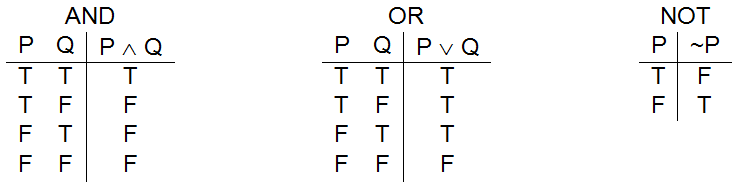
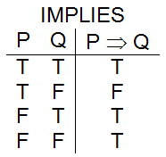
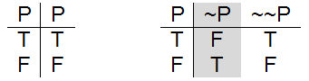
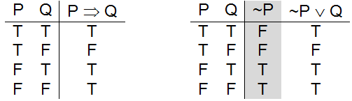
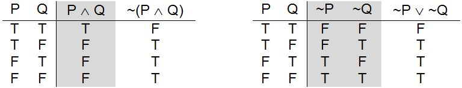
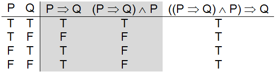
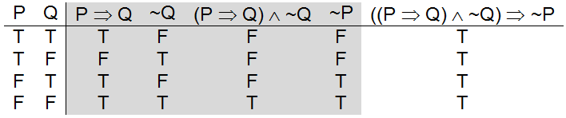
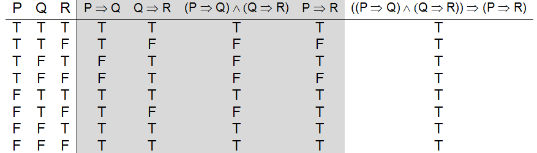

Propositional logic, is a two-valued logic in which every concept or idea that the system can reason about is represented as a variable that can be either true or false. For example:
P, Q, and R are propositional variables, each of which may be either true or false. Each propositional variable represents a statement about the “real” world, which may also be either true or false.
In the above example, I chose to use the symbols P, Q, and R as the names of the propositional variables. The actual choice of variable names doesn’t really matter. I could just as easily have used A, B, and C. However, to make it easy for humans to remember which propositional variable goes with which statement, meaningful names, such as raining, wet, and outside, are often used. To the propositional logic system these names are no better, or worse, than P, Q, and R.
Logical operators can be used to combine propositional variables together to form compound statements. As with the underlying propositions, these compound statements will be either true or false. Whether a compound statement is true, or whether it is false, will depend on the truth values of the individual propositions along with the precise definitions of the logical operators used.
The propositional logic operators – and, or, not
The meaning of each propositional logic operator can be defined using a truth table. A truth table lists all possible input configurations for a logical operator along with the resulting output (true or false) associated with those inputs. The three most common logical operators are and, or, and not. Each is written using a special symbol: and is represented as “∧”, or is represented by the "v" character, and not uses the tilde “~”. The truth tables that define these operators are presented in .
Each row of a truth table represents a possible set of circumstances, sometimes called a “world”. To the left of the vertical bar are the inputs to the operator. To the right of the vertical bar is the output value of the operator given those inputs. Hence, the first row of the and table of can be read as “when P is true and Q is true, then the statement P ∧ Q is true”. The third row of this table means “when P is false and Q is true, then the statement P ∧ Q is false”.
One way to think of propositional logic is as a game that consists of manipulating symbols based on a set of rules. When humans first made up the game they could have chosen the rules to be anything they wanted. However, what makes the “propositional logic game” interesting and worth playing is that its rules were designed to reflect the reasoning behavior of Man. Because of the way the operators are defined, the conclusions reached in the game should match the human notion of what is reasonable.
Since it is critical that the logical operators be defined in a way that “makes sense” to a human, let’s take a few minutes to carefully examine the definitions of and, or, and not to ensure that they reflect the meaning of their associated English words. The English sentence “It’s a warm and sunny day.” is considered to be a true statement only when both “warm day” and “sunny day” are true. If it is “not warm”, or “not sunny”, or both, the sentence is false. These four possibilities are accurately captured by the truth table for and.
Likewise, the English sentence “Marcus would be happy being rich or famous.” would generally be considered true when either “Marcus would be happy being rich.” is true, or “Marcus would be happy being famous.” is true, or both are true. If Marcus would not really be happy being rich, nor would he really be happy being famous, then the original statement would be false. The truth table for or captures this meaning.
The propositional logic operator – implies
Similarly, the English sentence “It is not cloudy.” is always true when the sentence “It is cloudy” is false and vice versa. The truth table for not ( ~ ) captures the way humans use the word.
If the three logical operators of look familiar that is because their truth tables are identical to the and, or, and not “logic gates” discussed in , Digital Circuit Design. In fact, logic gates are simply physical devices that implement logical operators.
In addition to and, or, and not, propositional logic includes a number of other operators. One such operator is implies which is written using the ⇒ symbol. Like all propositional logic statements, a statement written using the implication operator will be either true or false. The truth table definition of implies is given in .
The purpose of the implication operator is to capture the concept of an “if” statement as used in human languages. The symbol to the left of the arrow, P in this case, is called the premise of the implication. The symbol to the right of the arrow, Q is this case, is called the conclusion of the implication.
Before we go any further, it is important to convince ourselves that the truth table definition of implication does indeed capture the concept of an “if” statement. We will do so using the following English language sentence:
“If you are in the pool then you are wet.”
This statement can be rewritten in propositional logic as: P ⇒ Q where the premise, P, is “you are in the pool” and the conclusion, Q, is “you are wet”.
When should this “if” statement be considered true? Well, clearly, the statement is true in the world where both P and Q are true (i.e., where “you are in the pool” is true and “you are wet” is also true.). This case is captured by line one of the truth table.
When is this “if” statement verifiably false? When you are in the pool yet still dry – as could happen, for example, in the world where the pool had been drained for cleaning. This situation is captured by line two of the truth table.
In order to understand the last two lines of the truth table, ask yourself this: What does the implication say about the conclusion, Q, when the premise, P, is false? In other words, what does the “if” statement say about whether or not you are wet when you are not in the pool? The answer is, of course, nothing at all – I might be dry when I’m not in the pool or I might be wet because I’m standing in the rain or taking a shower.
Thus, when you are not in the pool, either a true or a false value for wet is acceptable. Your being either wet or dry does not invalidate the “if” statement, so it is marked as true in either case. Though the “if” statement is considered true in the worlds where its premise, P, is false, we say the statement is “vacuously true” in these cases, since the implication says nothing useful about its conclusion, Q.
At the beginning of this section, formal logic was defined above as “a way to represent information using symbols, together with a collection of rules for manipulating those symbols to reach logically valid conclusions.” So far, we have concentrated on describing how concepts can be represented using propositions (symbols like P and Q) and how the relationships between those propositions can be expressed using logical operators (symbols like ∧ ∨ ~ ⇒).
It is now time to begin looking at some of the rules for manipulating these symbols. We will examine two kinds of symbol manipulation rules: substitution rules and inference rules. The substitution rules allow us to replace one group of symbols with a logically equivalent group of symbols. These rules are often used to simplify an expression. The inference rules specify logically valid inferences that can be drawn from a collection of true statements. These rules allow us to determine the truth values of one or more propositions, given the truth values of other propositions.
The three most common and useful equivalences in propositional logic are:
We say these expressions are equivalent because in all worlds where one is true, so is the other; and in all worlds where one is false, so is the other. Thus, they have identical truth tables, and since truth tables provide the definition of an expression’s meaning, these expressions mean the same thing – they are equivalent.
The first equivalence, ~ ~ P equivalent to P, corresponds to the notion that “double negation” cancels. The expression ~ ~ P will always be true when P is true, and will always be false whenever P is false. Though we normally avoid double negation in English, we do occasionally say things like “I’m not unhappy.” where “unhappy” means “not happy”. Since, “not unhappy” or “not not happy” means “happy”, saying “I’m not unhappy.” is essentially equivalent to saying “I’m happy.”[11]
(a) P is equivalent to ~ ~ P
(b) P ⇒ Q is equivalent to ~P ∨ Q
(c) ~(P ∧ Q) is equivalent to ~P ∨ ~Q
Three useful propositional logic equivalences
presents truth tables illustrating the validity of the three equivalences. Note that some of the tables have “extra” columns in addition to the input and output columns. These columns, which are shaded gray, are used to hold temporary results and make the construction of the final output column easier to follow. For example, to generate the truth table for ~P ∨ ~Q I first negated P, then I negated Q, then I applied the or operator to those results.
It is possible to substitute one equivalent expression for another without changing the meaning of what is being represented, since the “meaning” of a propositional expression is fully defined by its truth table. For example consider the following statement:
“On sunny days weddings are held in the garden.”
This statement could be roughly approximated by the propositional expression:
(1) sunny_day ⇒ garden_wedding
From the equivalences given in , we know that this expression could be replaced with the following:
(2) ~ sunny_day ∨ garden_wedding
These two expressions, (1) and (2), are “logically equivalent”, but does the result of the substitution still make sense to a human? With some thought we can see that the answer to this question is “yes”. The new form of the statement, (2), would roughly translate back into English as:
“Either it is not a sunny day or weddings will be held in the garden”.
Upon reflection, you should be able to see that statements (1) and (2) are expressing the same idea. When one is true, the other is true. When one is false, so is the other. If you have trouble seeing this, look back at the truth tables for P ⇒ Q and ~ P ∨ Q in part (b) of and think carefully about the circumstances represented by each row.
The final equivalence, presented in part (c) of , make sense as well. Suppose I were to say to you:
“Conan The Barbarian is not both smart and strong.”
That sentence conveys the same information as the statement:
“Either Conan The Barbarian is not smart or Conan The Barbarian is not strong.”[12]
In other words, ~ ( strong ∧ smart ) is equivalent to ( ~ strong ∨ ~ smart ).
Now that we have some idea about how one expression can be substituted for an equivalent expression, let’s turn our attention to the problem of identifying rules for “reasoning” in propositional logic. We will cover three simple, but very powerful, inference rules: modus ponens, modus tollens, and chaining of implication.
A truth table illustrating the derivation of Modus Ponens
If I were to say the following two things to you:
Assuming you believed these two statements to be true, that I am not lying to you or mistaken, you would probably immediately conclude that Josh is playing Halo. This conclusion is logically valid in all worlds in which both original statements are true.
If we assign the propositional variable P to “Josh is at home”, and Q to “Josh is playing Halo”, the statement “If Josh is at home then he is playing Halo” becomes P ⇒ Q. Our reasoning process can then be captured by the inference rule known as Modus Ponens:
((P ⇒ Q) ∧ P) ⇒ Q
In other words, given “P implies Q” and given “P” we can conclude “Q”.
The truth table definition of Modus Ponens is presented in . Note that Modus Ponens is a tautology – a logical expression that is true in all worlds, regardless of the underlying truth values of P and Q.
Modus Ponens is a very important rule since it allows propositional logic systems to draw logically valid inferences. Because of its importance, let’s analyze the truth table of this rule very carefully. Columns one and two of the table represents the variables used in the expression, P and Q. All four combinations of P and Q are illustrated – representing the four possible worlds generated by this two variable system. The third column holds the truth values associated with the expression P ⇒ Q, which were copied from the definition of implies given in . Since column three contains “intermediate results” it is shaded gray. Column four, ((P ⇒ Q) ∧ P), was generated by applying the and operator defined in to the inputs in column three, P ⇒ Q, and column one, P. Since this column also contains “intermediate results” it is shaded gray. Finally, column five was generated by applying the definition of implies to column four, ((P ⇒ Q) ∧ P), as the premise and column two, Q, as the conclusion.
Line one of the truth table corresponds to the world in which the “if” statement, P ⇒ Q, and its premise P are both true. In that world, the conclusion Q is also true. This first world is the one you usually think about. In our example, this world corresponds to the one where the statement “If Josh is at home he is playing Halo” is true and also the statement “Josh is at home” is true. In this world, “Josh is playing Halo” is also true.
Line two of the truth table represents the world in which the “if” statement is false. In our example, this world corresponds to the situation in which you know Josh to be at home but you also know he is not playing Halo, which means that the statement “If Josh is at home he is playing Halo” must be false.
Lines three and four represent the worlds in which P is false. In our example, Josh is not at home. When Josh is not at home, we can conclude nothing about whether he is playing Halo – he may be (line 3) or he may not be (line 4).
Thus, even though the Modus Ponens inference rule is valid in all worlds, we can safely conclude that Q is in fact true in only one world – the world corresponding to line one of the truth table, where both the implication P ⇒ Qis true and its premise P is also true.
Let’s now turn our attention to another inference rule, Modus Tollens. To begin, if I were to say to you:
You would most likely conclude that Josh is not home – assuming you had no reason to question the accuracy of what I was telling you. You make this deduction because the only way that the implication can be true while its conclusion is false, is for its premise to also be false. In other words, the only way “If Josh is at home then he is playing Halo” can be true at the same time that “Josh is playing Halo” is false is for “Josh is home” to also be false.
If the propositional variable P is bound to “Josh is at home” and the propositional variable Q is bound to “Josh is playing Halo”, the above line of can be formalized as the inference rule Modus Tollens. Modus Tollens can be expressed in propositional logic as
((P ⇒ Q) ∧ ~Q) ⇒ ~P
In other words, given “P implies Q” and given “~Q” we can conclude “~P”.
The truth table definition of Modus Tollens is presented in . As was the case with Modus Ponens, Modus Tollens is a tautology – it is true in all worlds.
A truth table illustrating the derivation of Modus Tollens
The line of the truth table that corresponds to the argument given above is line 4 – Josh is not playing Halo (i.e., Q is false), but the “if” statement, P ⇒ Q, is true, so Josh cannot now be at home (i.e., P is false).
Line two of the table represents the world in which the “if” statement is known to be false. In our example, this can occur only when we know Josh to be at home, yet not playing Halo.
Lines one and three illuminate a careless mistake that humans often make. When the “if” statement, P ⇒ Q is true and Q is also true then P can be either true (line 1) or false (line 3). Humans often forget about the possibility of line 3 and simply assume that P must be true.
Translating back to our English language example, we know that when Josh is at home he plays Halo (i.e., the “if” statement is true). We also know that Josh is currently playing Halo (i.e., Q is true). Is Josh at home? Maybe, and then again maybe not. The “if” tells us that when Josh is at home he plays Halo, but it doesn’t say that home is the only place he plays the game. Maybe Josh likes to play Halo over at his friend Chris’s place as well.
The final inference rule we will look at is Chaining of Implication, which allows one to conclude P ⇒ R when given P ⇒ Q and Q ⇒ R. For example, suppose you were told:
Assuming you believed the statements to be true, you could conclude the following statement to be true:
If you are human then you are an animal.
This method of inference can be translated into the following propositional logic statement:
((P ⇒ Q) ∧ (Q ⇒ R)) ⇒ (P ⇒ R)
where P is “you are human”, Q is “you are a mammal”, and R is “you are an animal”.
A truth table illustrating the derivation of Chaining of Implication
The truth table definition of Chaining of Inference is given in . Because there are three propositional variables to be considered in this expression, the table requires 23, or 8, rows to enumerate all possible worlds. Due to the size of this truth table, I will simply note that the far right hand column is filled with T’s, indicating that Chaining of Implication is valid in all possible worlds (i.e., a tautology).
While Modus Ponens, Modus Tollens, and Chaining of Implication are valid rules in all possible worlds, they are usually used to reason about worlds in which we know, or assume, that a given group of statements are true and we want to determine whether there are any additional statements that must also be true given what we already know. For example, consider the following six statements, all of which we deem to be true.
These statements could be expressed in propositional logic in the following way
Assuming these statements are true, can we determine whether any additional statements are also true? Sure. Applying Modus Tollens to statements (1) and (4) tells us that swimming is false (i.e., ~ swimming is true).
( ( swimming ⇒wet ) ∧ ~ wet ) ⇒ ~ swimming
It is also possible, although a little more difficult, to determine from these statements that it is not raining. Modus Tollens applied to lines (2) and (4) tells us ~ ( rain ∧ outside ) must be true.
( ( ( rain ∧ outside ) ⇒ wet ) ∧ ~ wet ) ⇒ ~ ( rain ∧ outside )
Since ~ (P ∧ Q) is equivalent to (~ P ∨ ~ Q), ~ (rain ∧ outside) must be equivalent to (~ rain ∨ ~ outside). In other words, we now know that due to the fact that you are not wet “either it is not raining or you are not outside” must be true. Since statement (5) tells us that you are, in fact, outside; it must be true that “it is not raining.” In propositional logic this relationship would be expressed as:
( ( ~ rain ∨ ~ outside ) ∧ outside ) ⇒ ~ rain
Proof that this implication is valid is left as an exercise.
Since we now know ~ rain is true and statement (6) tells us warm is true, the expression (warm ∧ ~ rain) must also be true by the definition of and. Applying Modus Ponens to that fact and statement (3) ( warm ∧ ~ rain ) ⇒ pleasant tells us that pleasant must be true. In other words, it’s a pleasant day.
To summarize, using a small number of inference and substitution rules, we were able to determine that the following three things must be true:
These propositional logic statements correspond to the English sentences:
When you stop for a moment to contemplate this example, it is hard not to be impressed with the power of propositional logic. In a few short pages we were able to describe a system that can be used to encode the relationships between concepts like “rain”, “wet”, and “swimming”, and draw logically valid conclusions from those relationships. This is true in spite of the fact that the propositional logic system has no idea what the words “rain”, “wet”, and “swimming” actually mean. It has no knowledge of what water is, that some people can swim in water, what it feels like to be wet, or even that people need to drink water to live.
Propositional logic systems “understand” very few things. They “understand” that every propositional variable must be either “true” or “false”, but not both. They “understand” a small number of words: and, or, not, implies – words whose meanings were fully defined via truth tables. They “understand” that equivalent expressions, those with identical truth values in all worlds, may be freely substituted for one another. And they “understand” that inference rules, such as Modus Ponens, Modus Tollens, and Chaining of Implication can be applied under certain circumstances to some propositions to deduce the truth values of other propositions.
The simplicity of propositional logic systems and their lack of knowledge about the subject areas they can be applied to, make the results they are capable of achieving all the more impressive.
As powerful as propositional logic systems are, they are but the simplest of an entire family of symbolic logic systems. Other systems such as first order predicate logic, second order predicate logic, model logic, and others, overcome many of the weaknesses inherent in propositional logic and are even more powerful. However, they all boil down to symbol manipulation games – none require intuition, just the application of substitution and inference rules.
The mechanical nature of such systems is the reason why this author often refers to symbolic logic systems as accomplishing “reasoning without understanding”.
Exercises for
In this section we showed that ~ ( P ∧ Q ) is equivalent to ~P ∨ ~Q. Prove, using truth tables, that the following equivalence is also correct:
~ ( P ∨ Q ) is equivalent to ( ~ P ∧ ~ Q )
These two equivalences are together known as DeMorgan’s Laws.
Show that ( (~ P ∨ ~ Q ) ∧ Q ) ⇒ ~ P is true in all worlds (i.e., a tautology).
Jesse proposed the following as a rule of logic: ( ( P ⇒ Q ) ∧ Q ) ⇒ P
Is Jesse’s rule always valid? If not, under what circumstances does it fail?
Translate the following English statements into propositional logic expressions:
Given the following statements, which you are to assume true:
Use Chaining of Implication and Modus Ponens to show “HAL is a machine” is true.
Given the following statements, which you are to assume true:
Prove using propositional logic that you are not an infant.
Footnotes
[11] Of course, just because you said “I’m happy.” doesn’t mean you are telling the true. Like all propositions, the statement “I’m happy.” may itself be either true or false.
[12] Or, even more loosely: “Conan The Barbarian is either dumb or weak.”